From Chain-Of-Thought To Tool Use#
Four papers behind how modern LLMs learn from examples, reason, act, and use tools.
Papers:
Chain-of-Thought Prompting Elicits Reasoning in Large Language Models (Wei et al., 2022)
ReAct: Synergizing Reasoning and Acting in Language Models (Yao et al., 2023)
Toolformer: Language Models Can Teach Themselves to Use Tools (Schick et al., 2023)
Large language models generate fluent text, but early models fell apart on tasks requiring multi-step reasoning, external information, or precise computation. Between 2020 and 2023, four papers introduced ideas that are now baked into every major LLM system you use, from ChatGPT to Claude Code to LangGraph agents. Each builds on the last:
GPT-3 (Brown et al., 2020) – showed that large models can learn tasks from just a few examples in the prompt
Chain-of-Thought Prompting (Wei et al., 2022) – taught models to reason step by step
ReAct (Yao et al., 2023) – taught models to interleave reasoning with actions in the real world
Toolformer (Schick et al., 2023) – taught models to decide for themselves which tools to use
Together, they explain how we got from “LLMs as text completers” to “LLMs as reasoning agents that use tools,” which is the paradigm behind every agentic system we build in this course.
Part 1: GPT-3 and few-shot learning#
Brown, T.B., Mann, B., Ryder, N., Subbiah, M., Kaplan, J., Dhariwal, P., Neelakantan, A., Shyam, P., Sastry, G., Askell, A., et al. (2020). Language Models are Few-Shot Learners. NeurIPS 2020.
The problem#
Before GPT-3, the standard recipe for getting a language model to do a specific task was pre-training followed by fine-tuning: train a large model on a broad text corpus, then update its weights on a labeled dataset specific to your task. This worked well, but it had practical problems. You needed thousands of labeled examples for every new task. Models fine-tuned on narrow datasets could overfit to spurious patterns. And collecting task-specific training data for every possible use case simply doesn’t scale.
Humans don’t work this way. Give a person a few examples of a task and a brief instruction, and they can usually figure out the pattern. GPT-3 asked whether a language model could do the same.
The core idea: in-context learning#
GPT-3 (175 billion parameters) showed that a large enough language model can perform tasks by conditioning on just a few examples in the prompt, with no weight updates at all. The authors called this in-context learning and tested it in three settings:
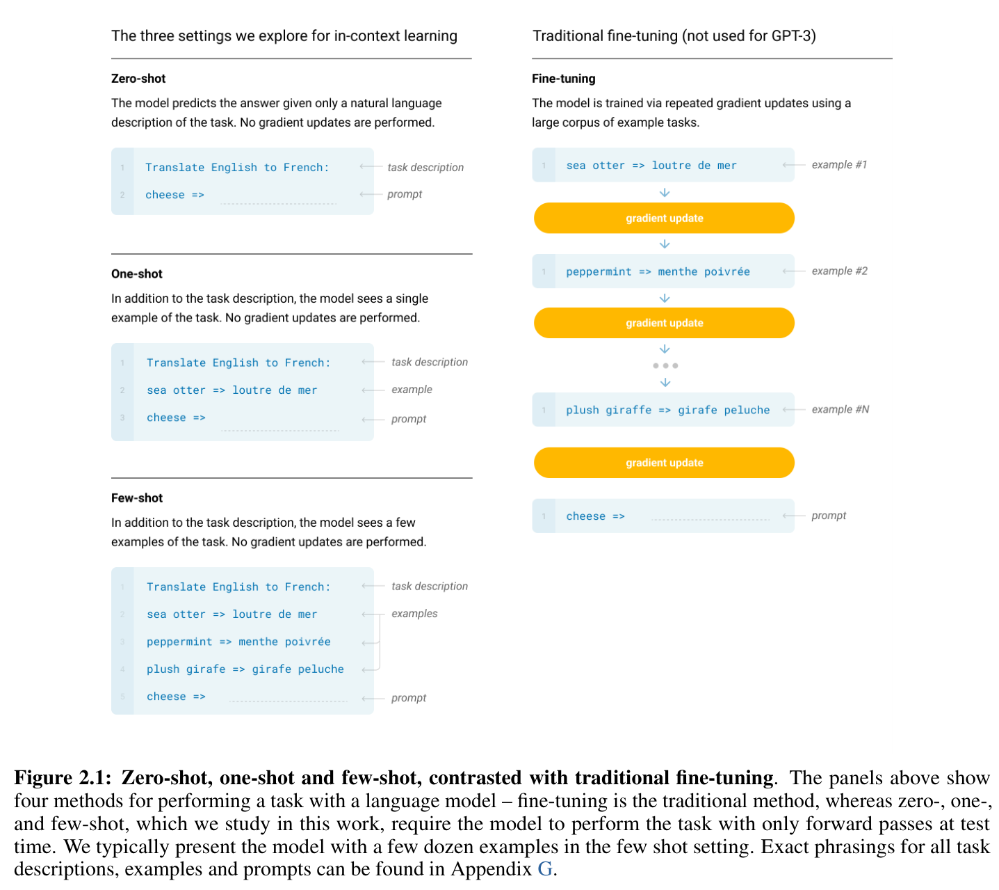
Figure 2.1 from Brown et al. (2020): The four paradigms for task adaptation. Fine-tuning (right) updates model weights on many labeled examples. Zero-shot, one-shot, and few-shot (left) provide the task at inference time through the prompt alone, with no gradient updates. For few-shot, the model typically sees 10–100 examples in context.
Zero-shot: give the model only a natural language instruction (“Translate English to French:”)
One-shot: add a single example of the desired input-output mapping
Few-shot: provide a handful of examples (typically 10–100, whatever fits in the context window)
No parameters are updated. The model “learns” the task purely from the pattern in the prompt.
Scale unlocks in-context learning#
In-context learning turns out to be an emergent property of scale. Small models barely benefit from additional examples in the prompt; large models get dramatically better.
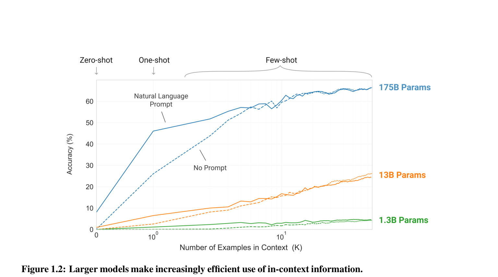
Figure 1.2 from Brown et al. (2020): Larger models make increasingly efficient use of in-context information. On a simple task (removing random symbols from words), the 175B parameter model improves sharply with more examples, while the 1.3B model remains nearly flat. The steeper “in-context learning curves” for larger models hold across a wide range of tasks.
Across 42 benchmarks, the pattern is consistent: few-shot performance scales faster with model size than zero-shot performance, and the gap widens at the largest scales.
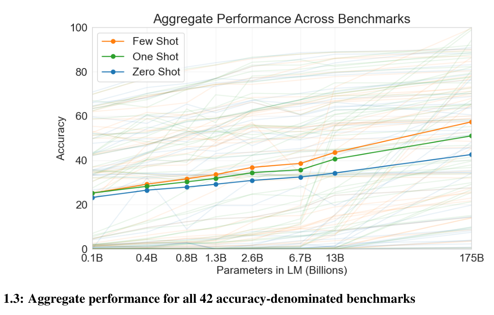
Figure 1.3 from Brown et al. (2020): Aggregate performance across all 42 accuracy-denominated benchmarks. Zero-shot performance rises steadily with scale, but few-shot performance increases more rapidly. At 175B parameters, few-shot prompting achieves roughly 57% aggregate accuracy vs. 40% for zero-shot. Larger models are better at extracting the task from examples.
The ceiling: arithmetic and multi-step reasoning#
GPT-3 did well on many NLP tasks, but it fell apart on problems that require multi-step computation. The authors tested it on arithmetic of increasing difficulty:
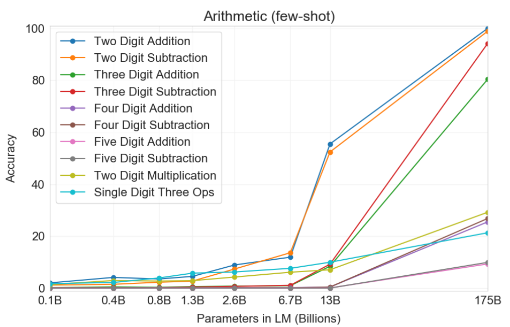
Figure 3.10 from Brown et al. (2020): Few-shot arithmetic performance across model sizes. GPT-3 175B achieves near-perfect accuracy on 2-digit addition and subtraction, but performance drops sharply for 4–5 digit operations and multiplication. Even the largest model can only reliably do simple arithmetic. This is a direct prediction problem: the model must jump from the question to the answer with no intermediate steps.
GPT-3 175B reaches 100% on 2-digit addition but drops to 25–26% on 4-digit operations and 29.2% on 2-digit multiplication. The model can pattern-match simple cases, but it has no mechanism for working through multi-step calculations.
The authors noted it themselves in the limitations section: “GPT-3 has notable weaknesses in text synthesis and several NLP tasks… it has difficulty with common sense physics… and struggles with tasks that involve comparing two sentences or snippets.” The model could learn what to do from examples, but it couldn’t show its reasoning.
Key takeaways#
Scale matters: in-context learning only works well at large model sizes.
No training data required for new tasks: just provide examples in the prompt.
Few-shot prompting closes much of the gap to fine-tuned models on many benchmarks.
Clear ceiling: tasks requiring multi-step reasoning or computation remain out of reach with standard prompting.
That ceiling is exactly what chain-of-thought prompting was designed to break through.
Part 2: Chain-of-thought prompting#
Wei, J., Wang, X., Schuurmans, D., Bosma, M., Ichter, B., Xia, F., Chi, E.H., Le, Q.V., & Zhou, D. (2022). Chain-of-Thought Prompting Elicits Reasoning in Large Language Models. NeurIPS 2022.
The problem#
Standard few-shot prompting, giving the model a few (question, answer) examples, works fine for many tasks but fails systematically on problems that require multi-step reasoning. Math word problems, multi-hop question answering, and symbolic manipulation all need intermediate computations that standard prompting skips entirely.
The core idea#
The insight is simple enough to seem obvious in retrospect: instead of showing the model (question, answer) pairs, show it (question, reasoning steps, answer) triples. The authors call this a chain of thought, a series of intermediate natural language reasoning steps leading to the final answer.
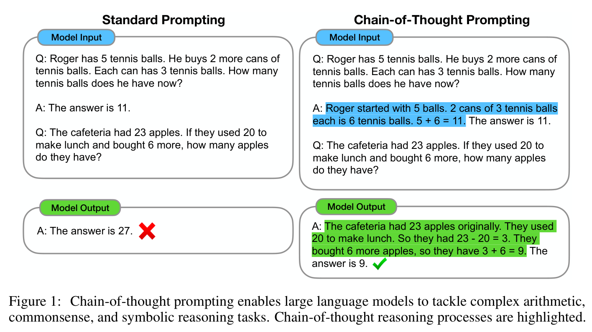
Figure 1 from Wei et al. (2022): Standard prompting gives the wrong answer (27) because the model jumps directly to a conclusion. Chain-of-thought prompting produces the correct answer (9) by working through intermediate steps: “23 apples originally… used 20… had 23 - 20 = 3… bought 6 more… 3 + 6 = 9.”
No model training, no fine-tuning, no architectural changes. You just change what goes in the prompt. The model learns to mimic the reasoning pattern from the examples.
What the chain of thought looks like in practice#
The authors manually wrote chain-of-thought examples for eight benchmarks spanning arithmetic, commonsense, and symbolic reasoning:
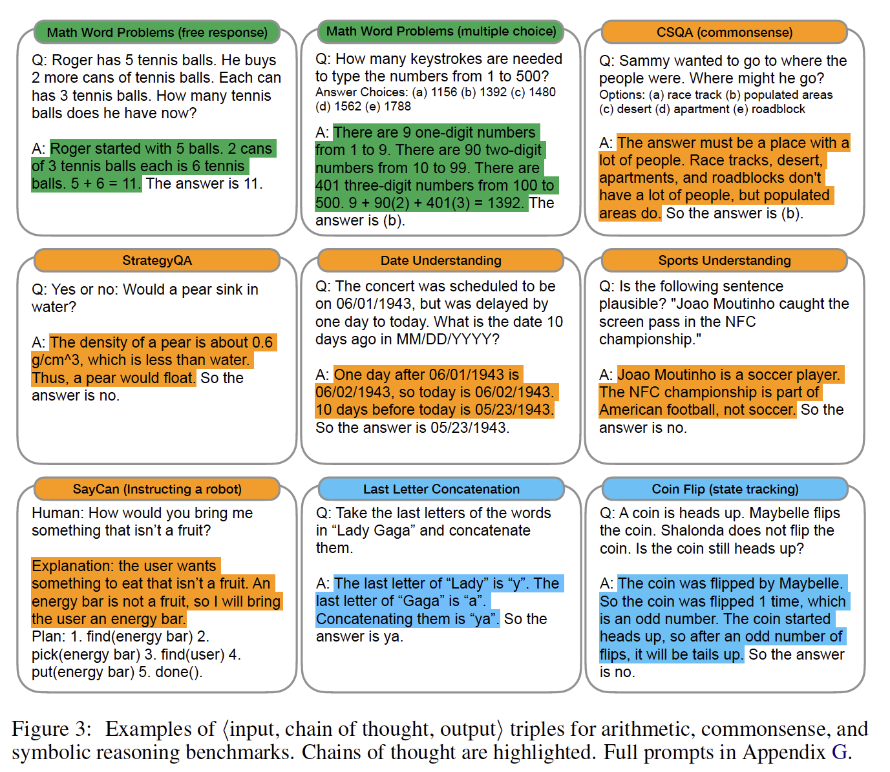
Figure 3 from Wei et al. (2022): Examples of (input, chain of thought, output) triples for arithmetic, commonsense, and symbolic reasoning benchmarks. Chains of thought are highlighted in color. The reasoning format adapts naturally to each task type: math problems get equations, commonsense questions get logical deductions, symbolic tasks get step-by-step manipulations.
An emergent ability of scale#
One of the paper’s more interesting findings is that chain-of-thought reasoning only appears in sufficiently large models. Small models (under ~100B parameters) prompted with chain-of-thought examples produce fluent but illogical chains of thought, and actually perform worse than standard prompting. The benefit only kicks in at scale.
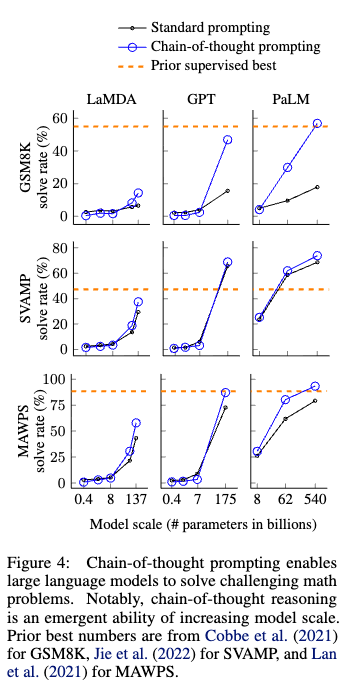
Figure 4 from Wei et al. (2022): For standard prompting, performance is flat as models scale. With chain-of-thought prompting, performance jumps once models reach ~100B parameters. This is the signature of an emergent ability: a capability that appears suddenly at scale rather than improving gradually.
The practical implication: chain-of-thought prompting does not help small models. When you work with GPT-4, Claude, or Gemini, it’s highly effective. Apply it to a small fine-tuned model and you may actually hurt performance.
State-of-the-art results without training#
With just eight hand-written chain-of-thought examples, PaLM 540B achieved new state-of-the-art on the GSM8K math word problem benchmark, outperforming even a fine-tuned GPT-3 with a verifier that was specifically trained on math problems.
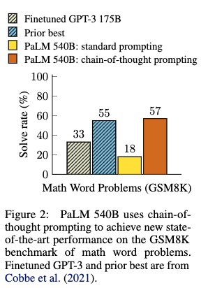
Figure 2 from Wei et al. (2022): On the GSM8K benchmark, PaLM 540B with chain-of-thought prompting (57%) surpasses the previous best result from a fine-tuned GPT-3 with a verifier (55%). Standard prompting with PaLM only achieves 18%. No task-specific training data required.
Key takeaways#
No training required. Chain-of-thought is a pure prompting technique.
Only effective for models with ~100B+ parameters.
Works for arithmetic, commonsense, and symbolic reasoning.
Robust across different annotators, exemplar orderings, and exemplar sets.
Limitation: the model reasons entirely from its internal knowledge. It cannot access external information or verify its own claims.
That last limitation, an “internal monologue” with no connection to the external world, is what the next paper addresses.
Connection to finance#
Wei et al.’s chain-of-thought technique has been directly adapted for finance. Nitarach (2025) introduced FinCoT, a finance-specific chain-of-thought framework that injects expert-defined reasoning blueprints into LLM prompts. Evaluated on CFA-style questions, FinCoT improved accuracy from 63% to 80% on a general 8B model, showing that careful prompt engineering can substantially boost performance in quantitative domains without any fine-tuning.
Part 3: ReAct – synergizing reasoning and acting#
Yao, S., Zhao, J., Yu, D., Du, N., Shafran, I., Narasimhan, K., & Cao, Y. (2023). ReAct: Synergizing Reasoning and Acting in Language Models. ICLR 2023.
The problem with reasoning alone#
Chain-of-thought prompting showed that LLMs can reason effectively. But CoT reasoning happens entirely inside the model’s head. The model cannot look up facts it doesn’t know, verify claims against external sources, or take actions in the real world. This means it will sometimes hallucinate – confidently stating wrong facts – with no way for the system to catch the error.
The core idea: think, then act, then observe#
ReAct (Reason + Act) adds a simple loop to chain-of-thought: after reasoning about what to do, the model actually does something (searches Wikipedia, runs a calculation, interacts with an environment), observes the result, and then reasons about what to do next. Each step in the loop is one of three types:
Thought: internal reasoning, just like CoT – plan the next move, interpret new information, handle exceptions
Action: an external action (e.g.,
Search[query],Lookup[term])Observation: the result that comes back from the environment
The model alternates between thinking and acting until it has enough information to answer.
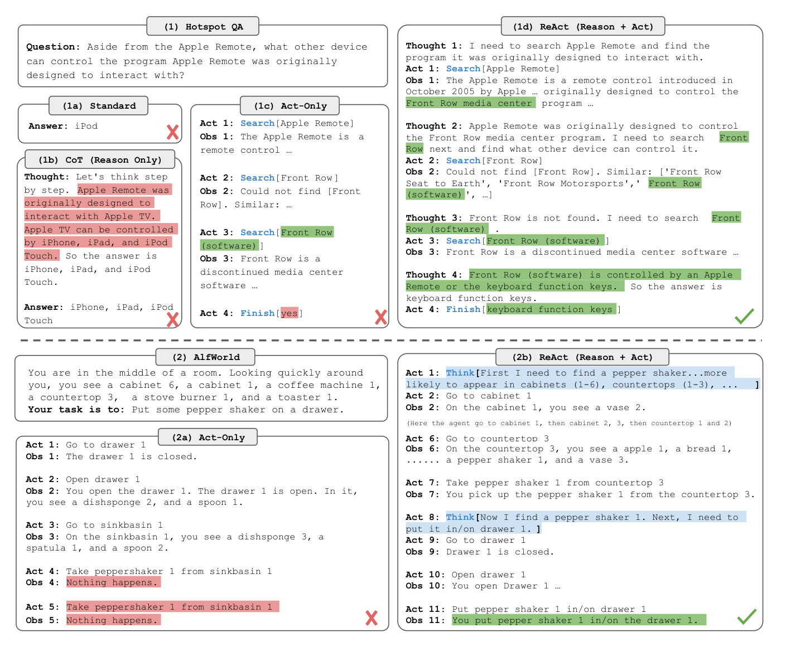
Figure 1 from Yao et al. (2023): Four approaches to the same question. (a) Standard prompting gives a wrong answer immediately. (b) Chain-of-thought reasons step by step but hallucinates facts. © Act-only takes actions without reasoning, making errors. (d) ReAct interleaves thoughts and actions – it reasons about what to search for, reads the result, and adjusts its plan.
Why this matters: grounding and auditability#
The key advantage is grounding. When CoT fails, it’s usually because the model hallucinated a fact and then reasoned perfectly from that wrong starting point. When ReAct fails, it’s more often because a search returned unhelpful results or the model made a reasoning error – problems you can actually diagnose and fix.
If you’re building a system that needs to be factually reliable, say, analyzing earnings data or verifying regulatory filings, this distinction matters. ReAct forces the model to retrieve information from external sources rather than making it up, and the explicit Thought-Action-Observation trace makes the model’s reasoning auditable.
In the paper’s experiments, ReAct outperformed both CoT-only and Act-only approaches on question answering (HotpotQA), fact verification (FEVER), and interactive decision-making tasks. The best results came from combining ReAct with CoT: try the grounded approach first, fall back to pure reasoning when retrieval doesn’t help.
Connection to modern tools#
The ReAct paradigm is the foundation of most agentic AI systems in production today:
Claude Code uses a ReAct-style loop: it reasons about what tool to use, executes it (read file, run command, edit code), observes the result, and reasons about the next step
ChatGPT with tools follows the same pattern: think about what to search, search the web, interpret results, respond
LangGraph agents explicitly implement the Thought-Action-Observation cycle as a state machine
MCP (Model Context Protocol) provides the standardized action space – the tools that ReAct-style agents can call
When you review and edit an AI assistant’s work in tools like Claude Code or Cursor, you’re acting as a human-in-the-loop in a ReAct system. You correct the reasoning, and the actions follow.
Part 4: Toolformer – self-supervised tool use#
Schick, T., Dwivedi-Yu, J., Dess`{i}, R., Raileanu, R., Lomeli, M., Zettlemoyer, L., Cancedda, N., & Scialom, T. (2023). Toolformer: Language Models Can Teach Themselves to Use Tools. Meta AI Research.
The problem#
Both CoT and ReAct require humans to design the prompts that teach models when and how to use tools. ReAct relies on hand-written few-shot examples showing the model how to interact with Wikipedia. What if the model could learn for itself which tools to use, when to use them, and how to call them?
LLMs have well-known limitations: they can’t do reliable arithmetic, they lack access to current information, they can’t translate between all languages, and they have no sense of the current date or time. Tools solve all of these problems, but teaching a model to use tools traditionally requires either large amounts of human annotation or task-specific prompting setups.
The innovation#
Toolformer proposes a self-supervised approach: the model teaches itself to use tools by determining which tool calls actually help it predict future tokens. No human annotations of tool use needed, just a handful of demonstrations of each API’s format.
Figure 1 from Schick et al. (2023): The model autonomously decides to call different APIs during text generation. It uses a QA system to find “the publisher of The New England Journal of Medicine,” a Calculator for “400/1400 = 0.29,” a Machine Translation system for “tortuga = turtle,” and a WikiSearch for the Brown Act. The model decides both when to call a tool and what arguments to pass.
The self-supervised pipeline#
The training process has three steps:
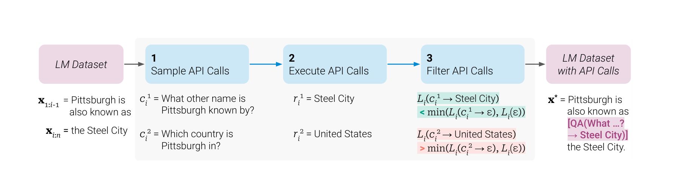
Figure 2 from Schick et al. (2023): The three-step approach, illustrated for a question answering tool. (1) Sample: Given a text, the model generates candidate API calls at various positions. (2) Execute: Each candidate call is actually executed to get a response. (3) Filter: Only API calls whose results reduce the model’s loss on future tokens are kept. The filtering criterion is what makes this work. The model keeps tool calls that genuinely help it predict what comes next, not just any tool call.
For each candidate API call, the system compares:
\(L_i^+\): the loss when the API call and its result are included
\(L_i^-\): the loss without the API call (or with just the call but no result)
Only calls where \(L_i^- - L_i^+ \geq \tau_f\) (the result meaningfully reduces loss) are kept. This ensures the model only learns to use tools when they actually provide useful information.
The five tools#
Toolformer was trained with five APIs:
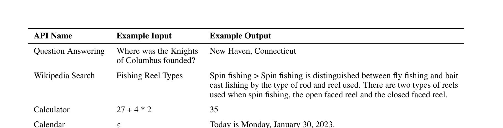
Table 1 from Schick et al. (2023): The five APIs integrated into Toolformer: Question Answering, Wikipedia Search, Calculator, Calendar, and Machine Translation. Each addresses a specific LLM limitation: factual knowledge gaps, computational inability, temporal awareness, and cross-lingual understanding.
Results: a small model outperforms giants#
Toolformer, based on a 6.7B parameter GPT-J model, substantially outperforms both OPT (66B) and GPT-3 (175B), models 10x and 25x larger, on multiple benchmarks:
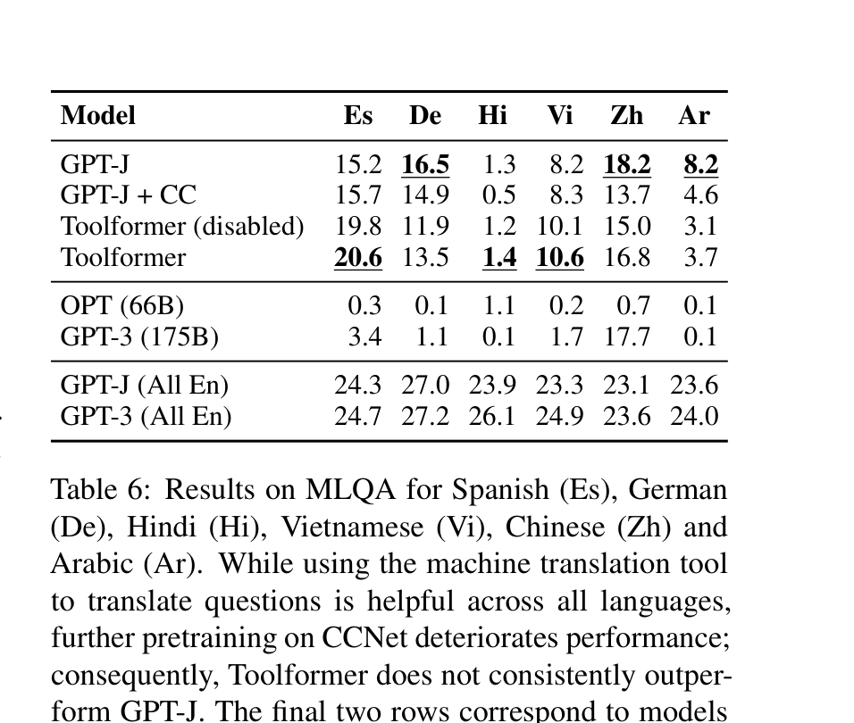
Tables 3 and 4 from Schick et al. (2023): Left (Table 3): On LAMA knowledge benchmarks, Toolformer (33.8 on SQuAD, 11.5 on Google-RE, 53.5 on T-REx) outperforms GPT-3 175B (26.8, 7.0, 39.8). Right (Table 4): On math benchmarks, Toolformer (40.4 on ASDiv, 29.4 on SVAMP, 44.0 on MAWPS) again outperforms GPT-3 175B (14.0, 10.0, 19.8). The Calculator tool is used in 97.9% of math examples. A small model with the right tools can outperform a much larger model without them.
Scaling laws for tool use#
The ability to effectively use tools only emerges at around 775M parameters. Below this threshold, models cannot learn when and how to make API calls, regardless of training.
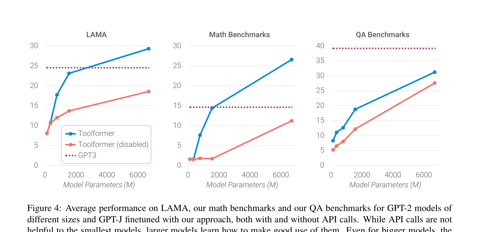
Figure 4 from Schick et al. (2023): Average performance on LAMA, math, and QA benchmarks for GPT-2 models of different sizes finetuned with Toolformer’s approach. Tool use (blue, solid) only provides benefit starting at ~775M parameters. Below that, models with and without tools perform similarly. This mirrors the emergent ability pattern from chain-of-thought prompting: tool use requires sufficient model capacity to learn when and how to delegate to external systems.
When are tool calls actually helpful?#
The paper includes an analysis of which API calls the model learns to keep versus discard:
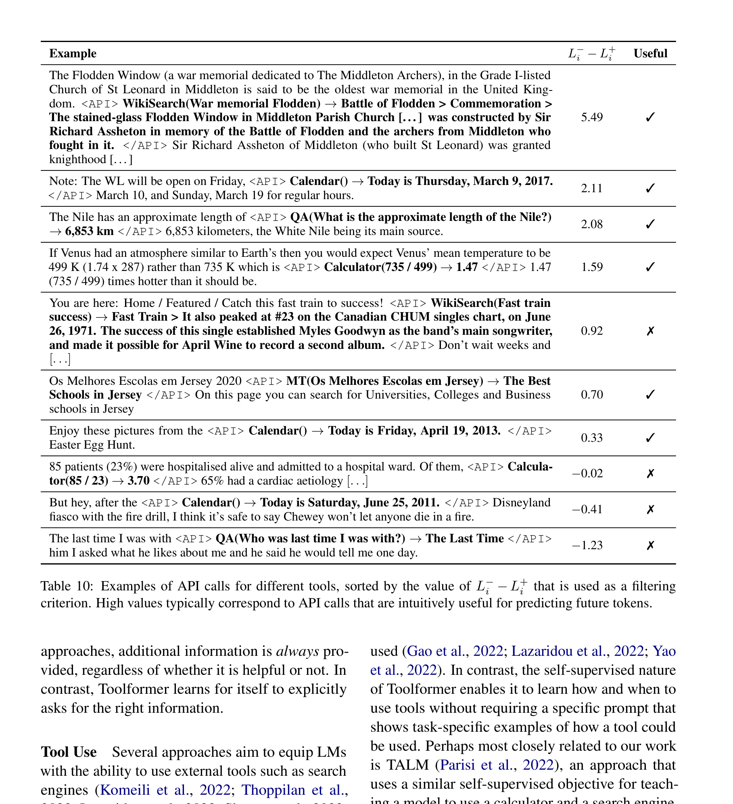
Table 10 from Schick et al. (2023): Examples of API calls sorted by filtering score \(L_i^- - L_i^+\). High values (top rows) are genuinely useful calls: looking up the Battle of Flodden, getting the current date, finding the length of the Nile. Low or negative values (bottom rows) are unhelpful: asking “Who was the last time I was with?” (unanswerable), or computing “85/23” in an irrelevant context. The model learns to distinguish useful from useless tool calls without human supervision.
Why Toolformer matters#
Toolformer demonstrated three principles now central to modern LLM systems:
Tool use can substitute for model size. A small model with the right tools can outperform a much larger model without them.
Models can learn tool use from self-supervision. No expensive human annotation of “when to use a calculator” needed.
The model should decide for itself when and how to use tools, rather than being told by a human when to invoke each tool.
These principles directly inform how modern systems work:
OpenAI’s function calling lets models decide which functions to call and with what arguments
Anthropic’s tool use follows the same pattern: Claude decides when to use tools based on the conversation
MCP servers provide the standardized API layer that tools like Claude Code use to interact with external systems
The big picture: from prompting to agents#
These four papers form a clear progression:
Paper |
Year |
Key idea |
What it unlocked |
|---|---|---|---|
GPT-3 |
2020 |
In-context learning from few examples |
Models can learn tasks from the prompt alone |
Chain-of-Thought |
2022 |
Show reasoning steps in the prompt |
Models can reason step by step |
ReAct |
2023 |
Interleave reasoning with actions |
Models can reason and act on the world |
Toolformer |
2023 |
Self-supervised tool use training |
Models can learn which tools to use |
Each addresses a limitation of the previous:
GPT-3 can learn tasks from examples but cannot reason through multi-step problems \(\rightarrow\) CoT adds intermediate reasoning
CoT can reason but cannot access external information \(\rightarrow\) ReAct adds actions
ReAct requires hand-written prompts showing how to use each tool \(\rightarrow\) Toolformer learns autonomously
Toolformer was limited to single tool calls \(\rightarrow\) modern systems combine all four ideas
When you use Claude Code to solve a coding task, the system is:
Reasoning about the problem (CoT)
Acting by reading files, running commands, and editing code (ReAct)
Choosing tools dynamically based on what the task requires (Toolformer)
If you understand these four papers, you understand why modern AI tools work the way they do, and you have the vocabulary to design your own agentic workflows.